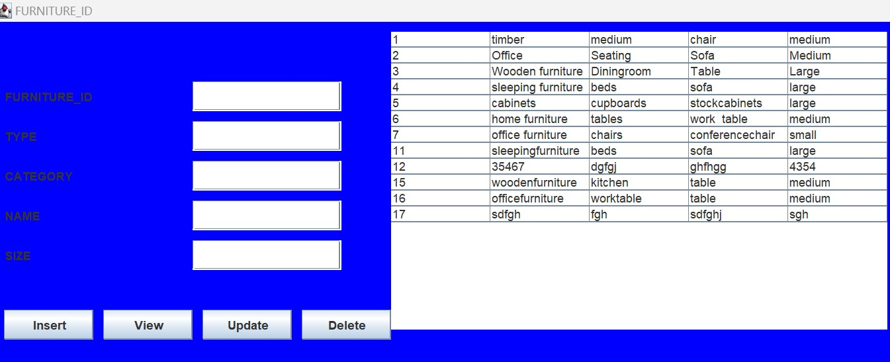
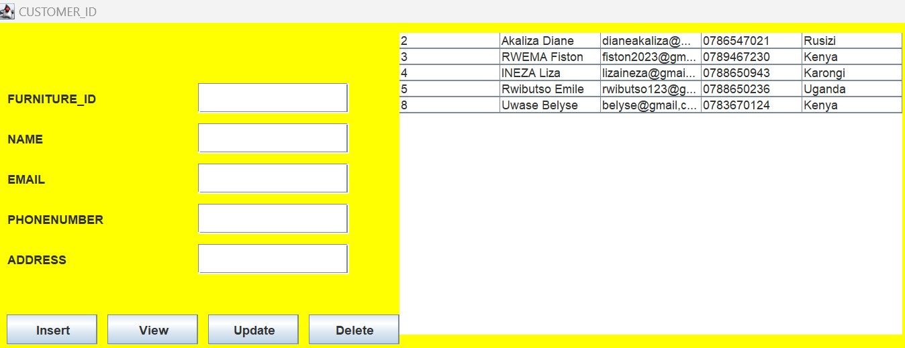
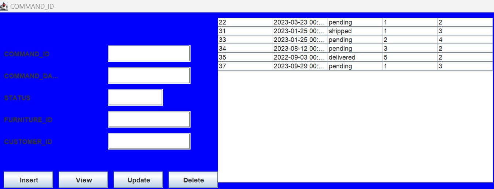
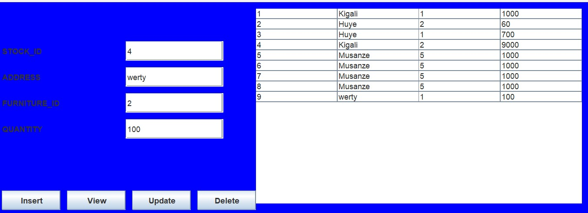

- DATABASE
Database name used: onlinesalesfurniture
- Tables
- Furniture Table
- Customer Table
- Command Table
- Payment Table
- User account Table
- Stock Table
- Attributes of Furniture Table Here are the descriptions or purposes of the attributes/columns used in Furniture table:
Furniture_Id: The column which are represents id of furniture which is unique value called PRIMARY. It is set to auto-increment (AUTO_INCREMENT). AUTO_INCREMENT means that the database will automatically generate a unique ID for each new record, typically incrementing the previous value of Furniture table.
Type: The column which represents the type or kind of furniture we have.
Category: The column which represents the category of our furniture.
Name: The columns which shows the name of product or furniture.
Size: The columns which shows the size of furniture it can be large,small or medium.
- Attributes of Customer Table Here are the descriptions or purposes of the attributes/columns used in Customer table:
Customer_Id: The column which are represents id of our customer which is unique value called PRIMARY. It is set to auto-increment (AUTO_INCREMENT). AUTO_INCREMENT means that the database will automatically generate a unique ID for each new record, typically incrementing the previous value of Customer table.
Name: The column which represents the name of our customer.
Email: The column which represents the email of customer.
Phone number: The column which represents the telephone number ofcustomer.
Address: The column which represents the address of where customer locate.
- Attributes of Command Table Here are the descriptions or purposes of the attributes/columns used in Command table:
Command_Id: The column which are represents id of Command which is unique value called PRIMARY KEY. It is set to auto-increment (AUTO_INCREMENT). AUTO_INCREMENT means that the database will automatically generate a unique ID for each new record, typically incrementing the previous value of Command table.
Command_date: The column which represents the date customers submit their orders.
Status: The column which represents the status of command it can be pending,delivered,....
Furniture_Id: The column which are represents id of furniture which is references to the furniture table value called FOREIGN KEY. It is a column of furniture table which has relationship between Command table.
Customer_Id: The column which are represents id of customer which is references to the customer table value called FOREIGN KEY. It is a column of customer table which has relationship between Command table.
- Attributes of Payment Table Here are the descriptions or purposes of the attributes/columns used in Pyment table:
Payment_Id: The column which are represents id of Payment which is unique value called PRIMARY KEY. It is set to auto-increment (AUTO_INCREMENT). AUTO_INCREMENT means that the database will automatically generate a unique ID for each new record, typically incrementing the previous value of Payment table.
Total amount: The column which represents the amount of money customers pay for the furniture.
Payment method: The column which represents the method customers used to pay products like Applepay,cheque,..
Date: The column which represents Payment date.
Furniture_Id: The column which are represents id of furniture which is references to the furniture table value called FOREIGN KEY. It is a column of furniture table which has relationship between Payment table.
Customer_Id: The column which are represents id of customer which is references to the customer table value called FOREIGN KEY. It is a column of customer table which has relationship between Payment table.
- Attributes of User account Table Here are the descriptions or purposes of the attributes/columns used in User account table:
User_Id: The column which are represents id of User which is unique value called PRIMARY. It is set to auto-increment (AUTO_INCREMENT). AUTO_INCREMENT means that the database will automatically generate a unique ID for each new record, typically incrementing the previous value of User account table.
User name: The column which represents the name of user.
Password: The column which represents the password of user.
Email: The columns which shows the email of user.
Phone number: The columns which represents the telephone number of user or customer.
- Attributes of StockTable Here are the descriptions or purposes of the attributes/columns used in Stock table:
Stock_Id: The column which are represents id of Stock which is unique value called PRIMARY KEY. It is set to auto-increment (AUTO_INCREMENT). AUTO_INCREMENT means that the database will automatically generate a unique ID for each new record, typically incrementing the previous value of Stocktable.
Address: The column which represents the place where our stock located.
Furniture_Id: The column which are represents id of furniture which is references to the furniture table value called FOREIGN KEY. It is a column of furniture table which has relationship between Stock table.
Quantity: The column which represents the Quantity of our product we have in stock.
Furniture table database structure: This is a table which keep all needed information about products of our Business Those characteristics , size ,category of our product help customer to know kind of products we have and then choose what he/she wants to buy.
Customer table database structure: This is a table which indicates the identity of customers and what product need to buy, which helps supplier to know customer and delivery his/her products where customer send Email, Names and Phone number to supplier and get his/her command. .
Command table database structure: As we know When there is online Business customer visit web of that company or Business and look kind of products sold so when customer like a product and decide to buy it he/she must make or send command to Business through online and then wait for products.
Payment table database structure: This is table shows transactions of money paid and payment method customer used. As we know in Business there is Income and expenses which help Business to know it’s profit.
User account table database structure: This is a table crated by user where user must create new account so as to get access on our system of selling online and use email and password to login.
Stock table database structure For this table it shows the Quantity remain in our stock which can help in stock monitoring.
- JAVA PROGRAMMING
- Description
Eclipse IDE: we use eclipse to develop our system to Develop and test our code written in other programming language.
• JDK (java programming kit): is a software development environment used for developing applications and applets in Java language. It includes a range of tools such as an interpreter, a compiler, an archiver, and a documentation generator. The JDK is a crucial toolset for any programmer working in Java.
- Forms and Images
Furniture Form
Customer Form
Command Form
User account Form

Stock Form

Introductionin this chapter we are going to look on how java programming language used in system and also we Describe full detail of how everything will function together with database that have been describe above and how it cope with full analyzed system.
Tools used to develop this system in java programming
MySQL Connectors: MySQL provides standards-based drivers for JDBC, ODBC, and .Net enabling developers to build database applications in their language.